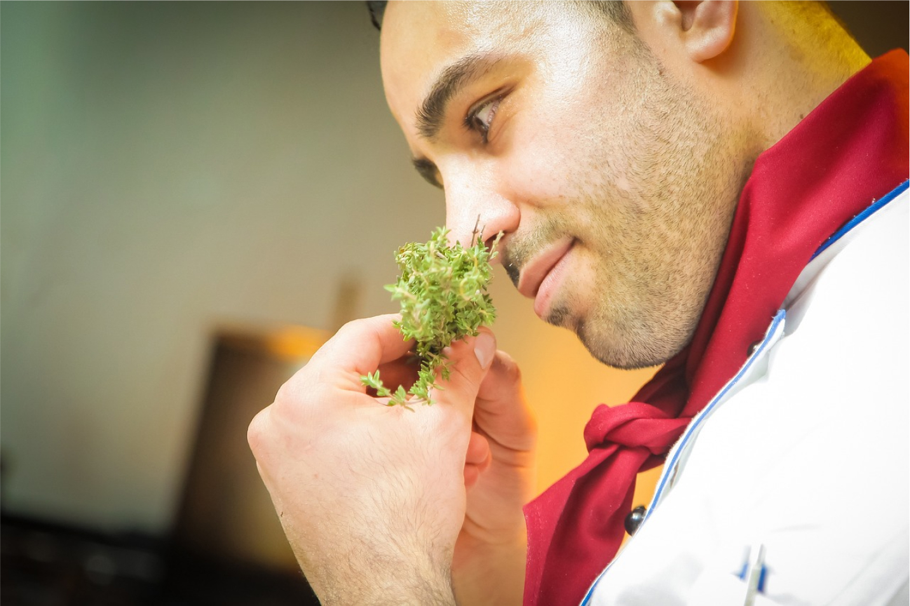

Bienvenue au quai antique
Bienvenue sur le site de notre restaurant gastronomique situé au cœur de la magnifique ville de Chambéry. Le chef Arnaud Michant vous invite à découvrir un voyage culinaire mémorable.

Le chef Arnaud Michant vous invite au
Bienvenue sur le site de notre restaurant gastronomique situé au cœur de la magnifique ville de Chambéry. Le chef Arnaud Michant vous invite à découvrir un voyage culinaire mémorable.
Découvrez la richesse des saveurs avec nos plats élaborés à partir de produits frais et de saison, cueillis localement.